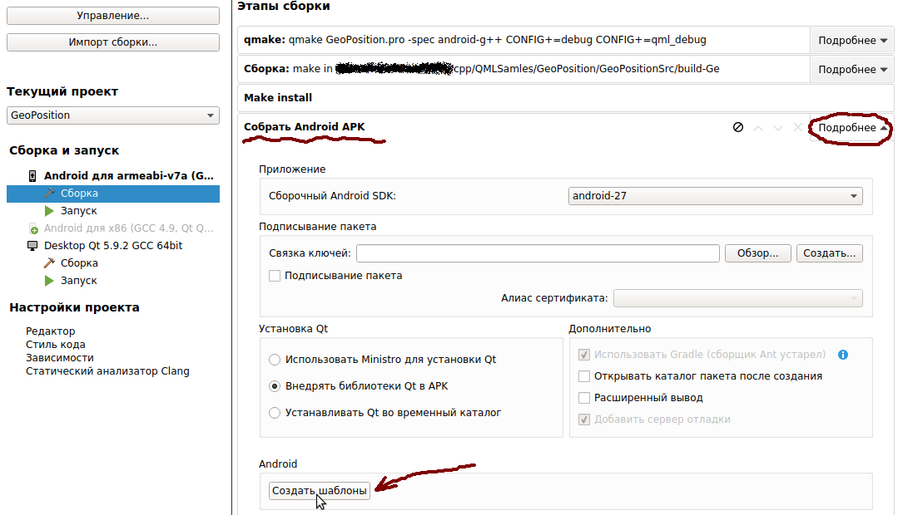
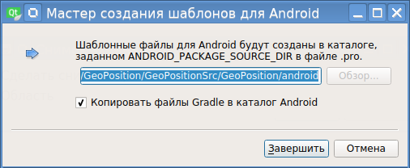
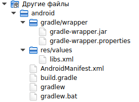

Создание шаблона настройки Android-приложения - это очень важная часть разработки, без которой сделать человеческий деплой будет очень проблематично. Проблема в том, что в Qt, как минимум в версии 5.9.x, кастомного шаблона приложения по-умолчанию просто не создается. Что это значит и к чему это приводит, написано в этой статье.
Что такое шаблон настройки Android-приложения
Для начала нужно понять, что скрывается за термином "шаблон настройки Android-приложения". Это просто некоторый набор файлов, которые используются при сборке приложения под платформу Андроид. В этих файлах находятся настройки, которые влияют как на процесс сборки, так и на процесс развертывания и запуска нативного Андроид-приложения. Как минимум, это следующие файлы:
В момент сборки Qt создает в сборочных Debug или Release - директориях соответсвующие файлы (они размещаются в поддиректории android-build). И Qt использует их для построения APK-пакета.
Зачем нужен кастомный шаблон приложения
При разработке Андроид-приложения рано или поздно возникнет момент, когда необходимо внести какие-нибудь изменения в файл AndroidManifest.xml. Если попытаться отредактировать этот файл в директории сборки Debug или Release, то ничего не получится: в момент пересборки проекта данный файл будет заменен на стандартный AndroidManifest.xml, и все изменения просто исчезнут.
Как же быть? Просто в проекте надо создать кастомный шаблон настройки Андроид-приложения, и уже он, а не дефолтный шаблон будет применяться при сборке.
Создание кастомного шаблона приложения
Для создания кастомного шаблона приложения нужно перети на вкладку настройки проекта, и на пункте Сборка для armeabi-v7a (или что там увас) надо раскрыть настройку Собрать Android APK с помощью кнопки Подробнее.

В разделе Android будет кнопка Создать шаблоны. Нажимаем ее, и откроется окно мастера создания шаблона Android-приложения:

Если стоит галочка "Копировать файлы Gradle в каталог Android", то это значит что в кастомном шаблоне будут так же размещены файлы java-класса, который из-под себя будет запускать нативный код, созданный Qt. Если галку снять, то в кастомном шаблоне этих файлов не будет, и они будут просто подставляться в момент сборки как обычно.
Надо просто нажать кнопку Завершить, и кастомный шаблон будет создан. Что при этом произойдет?
1. В каталоге проекта будет создан подкаталог android, в котором и будут расположены файлы кастомного шаблона приложения.
2. В дереве проекта появится ветка Другие файлы, которая будет выглядеть так:

3. В файле проекта *.pro добавятся следующие строки:
DISTFILES += \
android/AndroidManifest.xml \
android/gradle/wrapper/gradle-wrapper.jar \
android/gradlew \
android/res/values/libs.xml \
android/build.gradle \
android/gradle/wrapper/gradle-wrapper.properties \
android/gradlew.bat
ANDROID_PACKAGE_SOURCE_DIR = $$PWD/android
Вот и всё. Теперь можно править файл AndroidManifest.xml в подкаталоге android, и он будет применяться в процессе сборки программы.